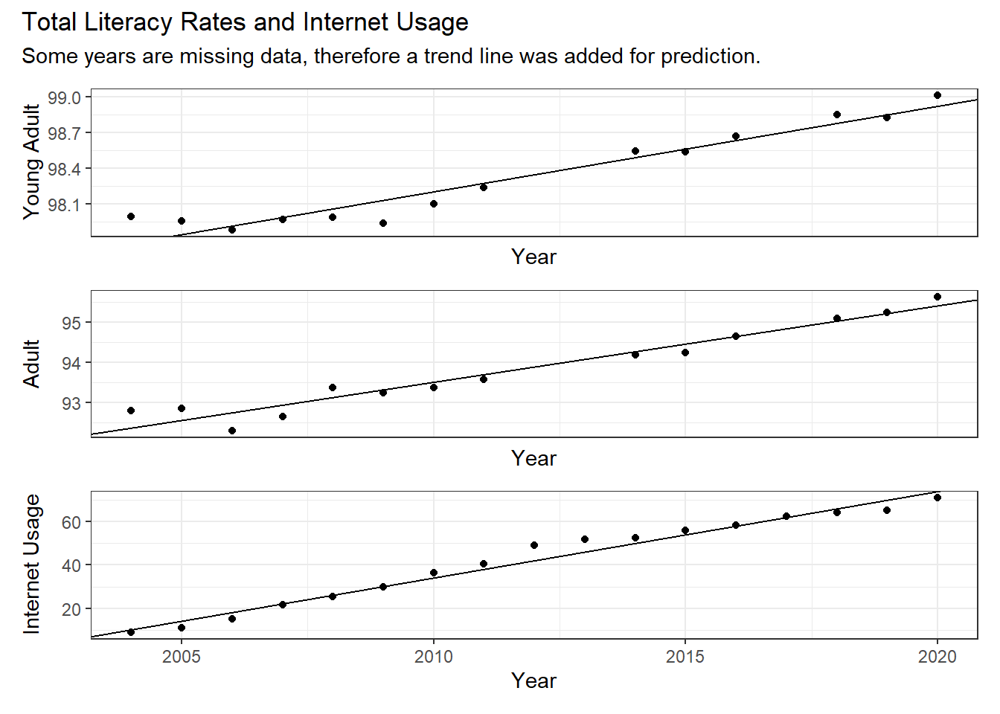
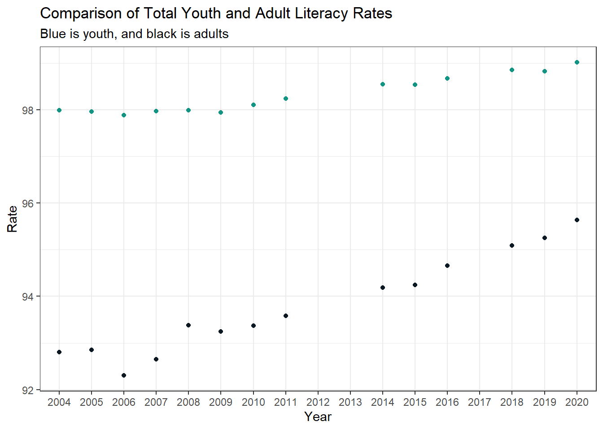
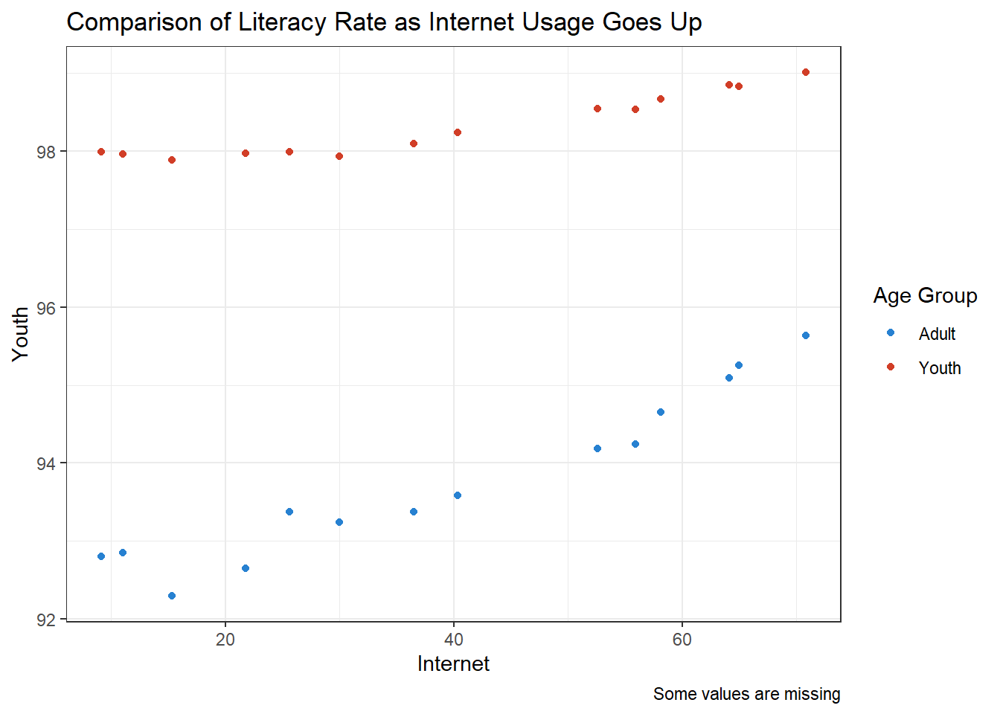
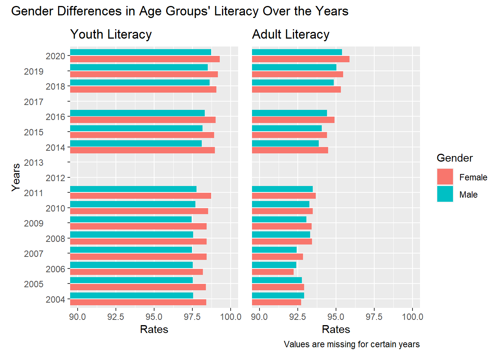
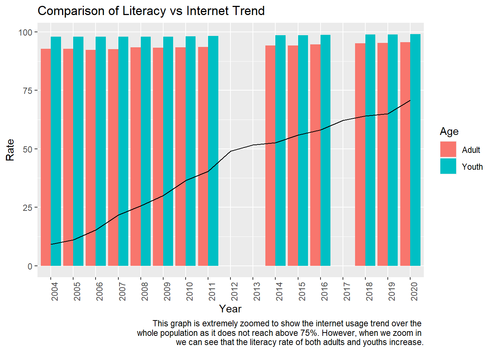
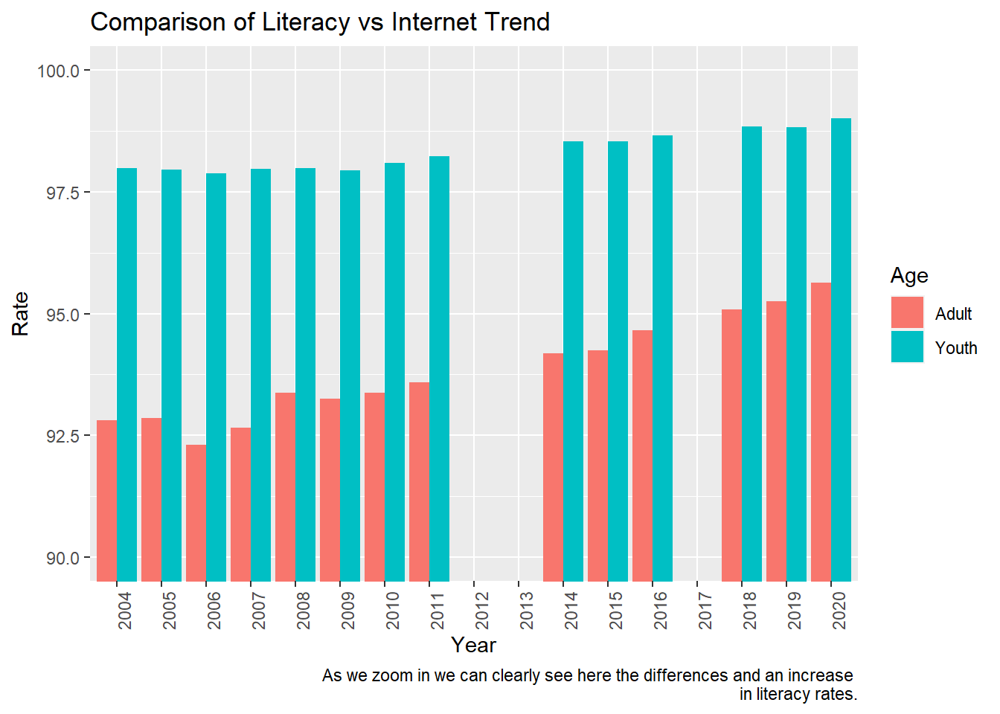

[1] 21 19Final Project: Gauri Naik
final_Project_assignment_1
final_project_data_description
Introduction
The World Bank Open Dataset is a repository of data from various countries under different themes. Each country has a listing of descriptors, including but not limited to GDP, homeless and poverty rate, violence and homicide rate, primary education completion rate, etc. Each of these variables are over time, going from a certain year to current. The datasets are updated every month.
Literacy rates have been an issue for many countries around the world, and while there are many variables that affect literacy rates, this report will look at internet usage in particular. The internet in its modern mutation allows for relatively easy access to widespread knowledge, and can be utilized to teach and learn language among other things. This report will look at literacy rates against internet usage in Colombia from 2004 to 2020, and describe correlations between the two variables. We would like to see if internet usage has a positive influence on education in Colombia, and one way to visualize this is using literacy rates.
Dataset Description
The data below contains information of Colombia’s income relative to other countries, their literacy rate based on age, and internet usage in percentage of population. I’ve subset a preview of the data below in tibble form.
The dimensions of the dataset are printed above as 21 rows by 19 columns. These 21 rows are split by country into literacy rates and internet usage in population percentage and the columns are the country codes, indicator codes (the variable labels of literacy split by gender and age, and internet usage percentage), and the range of years I’m interested in. I’ve printed the average of each country’s row means here. The first set of numbers is from the subset of Colombia: the means of literacy rates in female youths 15-24, male youths 15-24, total youths 15-24, and then female adults, male adults, total adults, and the final number in the first row is the average population percentage of internet users. The second set of numbers is the range of our dataset.
[1] 97.92509 98.70967 98.32144 93.65754 93.93930 93.80306 42.30901[1] 9.11869 99.29406Plan for Visualization
In order to view the data above, first I will create three evolution scatter plot graphs (with trendlines showing the overall pattern of correlation) with the total literacy rates and internet usage. I would like a basic visualization of the evolution of each so we can see the rates over the years without interference from other variables.
Then I will generate another scatter plot using the internet usage rate as the x-axis, to start visualizing any correlation between literacy rates and internet usage. We can visualize a basic trend by looking at literacy rates as internet usage increased. However, this does not show evolution over literacy vs. internet usage over time, therefore while we may draw assumptions from the graph about correlations, we cannot assume anything over a time basis.
I also want to examine gender differences in literacy rate and internet usage. While internet usage is not split into gender, it is a way to understand the general environment that people were in; most information before the internet spread due to word of mouth and as such it is a valid assumption that those people who utilized the internet when percent was low would spread the information they learned through word of mouth and there could still be correlation between the environment and literacy rate. These gender differences would more than likely benefit from a bar graph to be able to better compare values.
I would also like to describe the literacy rate of youth vs adults as it is usually a social observation that younger generations use the internet either more and/or differently than older generations. This graph is also a scatterplot to better visualize.
These graphs will help me examine the literacy rate and internet usage correlation from various angles. I will also introduce historical context as required if I believe that it would have affected infrastructure, and in turn, education and electricity.
Results: Analysis and Visualization
Our question was the trends and comparisons between young adult literacy rates, adult literacy rates, and internet usage over the years. We are primarily interested in seeing if there is a positive correlation between internet usage by the population and literacy rate.
Let’s look at the various graphs generated. First, we look at the summary of the variables we are interested in.

I’ve included a trend line so we can better visualize the trend over the years. As we can see, the trend for all three variables included (young adult literacy rate, adult literacy rate, and useage of internet by total population) goes up as the years progress. We will note, however, that the literacy rate of young adults seems relatively high (starts at 98% in 2004, whereas adults start at 92.8%) comparatively speaking. The rate of internet usage is also very lower in 2004, at 9.12% of the total population using it. Therefore these graphs, while showing a positive trend, are also in very different ranges.
Let’s now look at the comparison between total adult and youth literacy rates over the years.

As we can see, the y-axis starts at 92% of the population. Relatively speaking, the literacy rate for Colombia is very high, and a good amount of the population can read. However, it seems that more youths (age group 15-24) can read compared to adults who have been taught to read. It also looks like the adult literacy rate has a very drastic increase, ending in 2020 with 95.6% total adults having been taught to read.1

This third graph compares the literacy rate of adults and youths as internet usage goes up. We can assume the x-axis of internet usage to follow the linear progression of time, as in the summary graphs, internet usage only increases as the years progress.
Here, we can see that as usage of the internet by the general population increased, the literacy rate also increased. We can see that the adult population’s literacy rate also increased. Of course, there may be other factors involved, but that there is a positive correlation between adult literacy rates and internet usage can allow us to draw some assumptions about the internet and its usage as an education tool.
We will divert to comparing the literacy rates of genders over the years. A component of internet usage in countries is the infrastructure built to allow the general populace to use it. As such, we will assume that both genders had equal access to the internet for the graph below.

It seems that from 2004 (at the bottom of the graph provided) to 2020, females hold a marginally higher literacy rate than males. While this trend holds throughout the year range we examined for young adults, for adults it seems that males for a while had a slightly higher literacy rate than females, until around 2007, when the bar graph shows that females hold the higher literacy rate for after 2007. We cannot say, however, whether this difference in education is statistically significant, but that there is a correlation between gender and literacy rate through age groups is visible through this chart.
This graph below maps the percent of population using the internet over the total literacy rate of adults and youths over the years.

The graph, as written in the caption, is extremely zoomed out so we may see the positive trend of internet usage. Since the literacy rate of the population is extremely high even when internet usage is very low, it is hard to compare literacy rate to internet usage rates for this dataset. Running statistical analyses for this visualization is out of the scope of this report, so we can only make assumptions based on graphical analyses.
However, as we can see, internet use does increase over the years. Therefore, if we zoom into the top half of the graph:

We can see a stark difference between literacy rates for adults and youths in 2004, and as the years go by, adults’ literacy rates increase as internet use increases.
As a sidenote, there was missing data for two consecutive years for both adult and young adults. However, we could extrapolate using trend lines an average positive increase over both years, and therefore it did not affect our observations much.
Conclusion and Discussion
Our question of whether or not internet can affect education by using the measure of literacy rate has been answered using graphical analyses. In this case, we found a positive correlation between the increase in internet usage and literacy rate in the population, both between gender and age group.
We have many limitations in this work. Our dataset is open-source from a databank of international statistical analyses and there is much data that is not relevant to the question we were analyzing or, if it was relevant, many years of information was missing. Data that was relevant to the question we are analyzing includes confounding variables, where other factors may affect increase in internet usage and literacy rate and internet usage is just positive correlation, and we cannot assume correlation equals causation. A statistical analysis must be conducted on various variables to claim any final conclusions, which is out of the scope of this project.
Further analyses we could conduct in the future include tests of whether or not the difference in literacy rates in genders and age groups is statistically significant, and what variables affected it. If possible to source this information, we could also look at internet usage and infrastructure surrounding electricity, any incentives for advancing technology, and if internet usage increased availability of educational material and literary material for the general populace, versus a specific percent of the population having access to literary material.
Bibliography
The World Bank Data. (2023). Colombia. Retrieved May 2023 from https://data.worldbank.org/country/colombia.
Posit, PBE. RStudio (4.3.0). https://posit.co/download/rstudio-desktop/.
Toro, A. (2023, February 7).Colombian family: Understanding values and traditions. Colture. Toro, A. (2023, February 7). Colombian family: Understanding values and traditions. Colture. https://www.colture.co/bogota/culture-bogota/lifestyle-customs-traditions/colombian-family/
Footnotes
World Bank is not clear on how this data is collected, therefore we do not know if young adults on the cusp of the cut-off for adult groups surveyed the year after were included in the literacy rate calculations, rather than following the same people in each group regardless of age. It does seem, though, that it wouldn’t matter as the young adult group’s literacy rate also rises, implying that younger children continue to receive education to read.↩︎